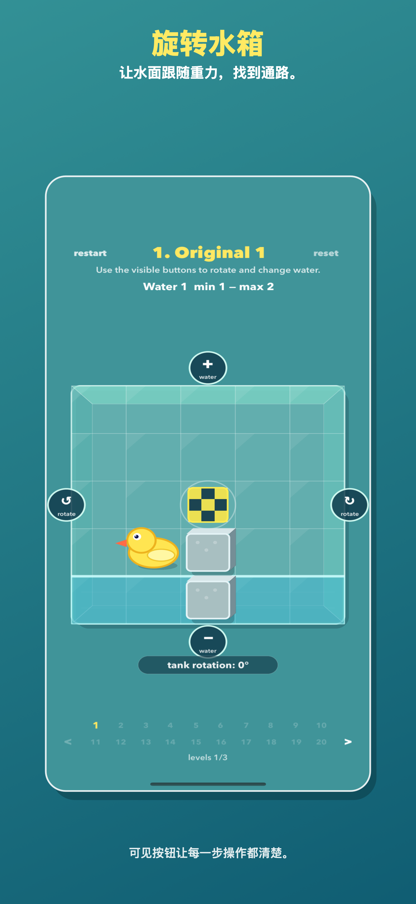
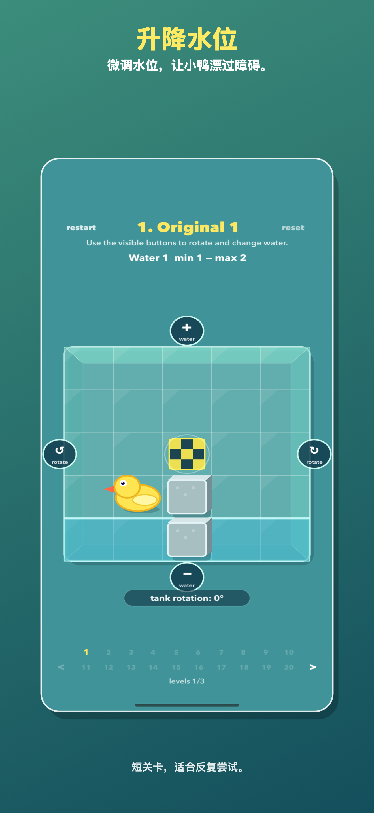
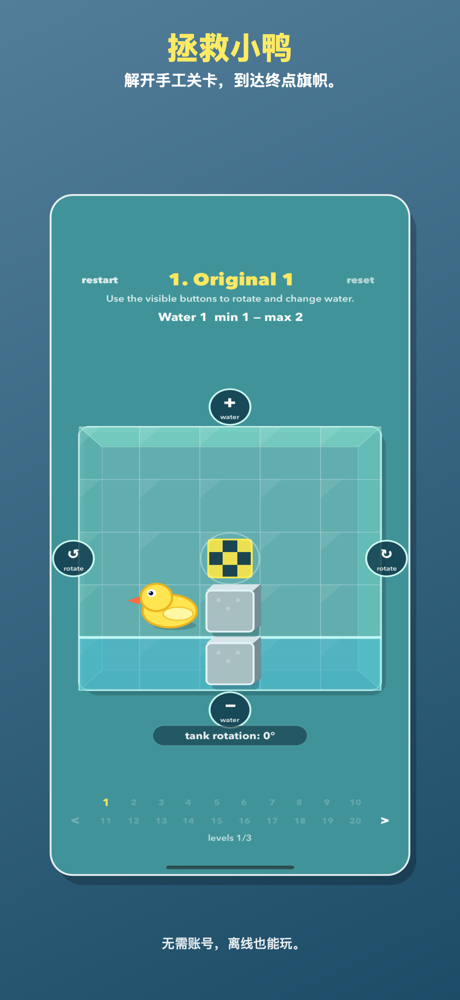

转动整个水箱，让重力改变前进路线。

规则看得见的小型解谜玩具
每一关都是透明水箱。移动前就能看见小鸭、旗帜、障碍和水位，再用直接的控制方式解题。
升水、排水、拖动水面，也可在支持设备上使用可选声音控制。
无需账号，无强制联网，也不依赖云端存档。
截图


指南
Save Ducky 是一款轻量水流解谜游戏：旋转玻璃水箱，调整水位，把小鸭送到终点旗帜。

每一关都是透明水箱。移动前就能看见小鸭、旗帜、障碍和水位，再用直接的控制方式解题。
转动整个水箱，让重力改变前进路线。
升水、排水、拖动水面，也可在支持设备上使用可选声音控制。
无需账号，无强制联网，也不依赖云端存档。


Save Ducky 是一款轻量水流解谜游戏：旋转玻璃水箱，调整水位，把小鸭送到终点旗帜。